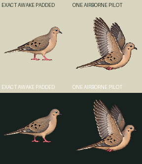
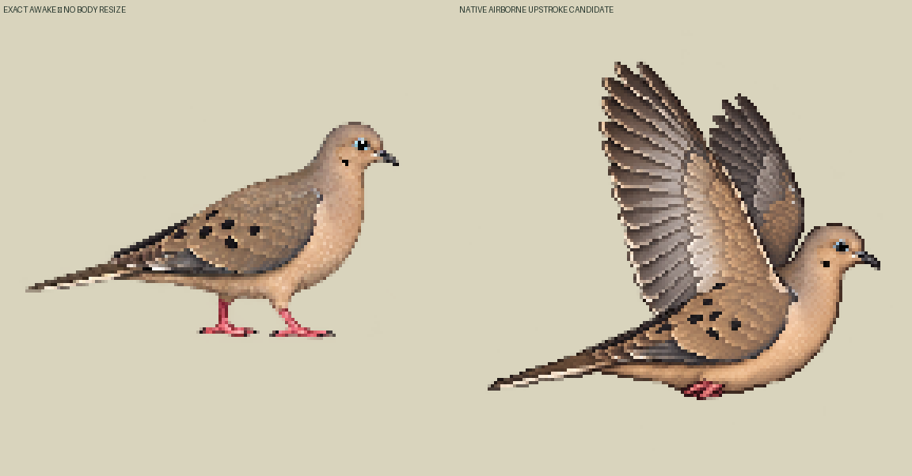

ONE actual edit call/drawing, no second or third call before parent framing review. Actual articulated raised wings and one visible tucked pink toe cluster. Do not infer two independent tucked feet or flight-cycle completion. Native body/head/tail are lower than the padded awake; body/eye redraw is retained, never hidden by source fit/offset.
Exact awake144square comparison | airborne candidate144square, density1
Old144×96 awake padded TOP16/BOTTOM32 without body move/resize;4x exactRGBA reference576square. Native1254square→144square fullcanvas floor-center channel copy, no crop/paint/alpha cleanup/snap. Virtualorigin81,100 is an abstract flight registration proposal, NOT a planted support. contacts[]/geometryReviewedfalse/supportWorldnull.
Manual image-region comparison indicates bill/eye/tail about31–32pixels lower than old reference. Raised-wing envelope bbox is NOT a body-length fitting metric. Body length target118world remains a framing review question. Source has no border alpha/clipping. No whole-sprite bob or root path is credited as new wing art. One STATIC source pose only; takeoff/landing/fullflight/runtime admission remain unaccepted.


Loading…